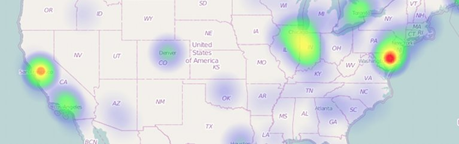

Leaflet 热力图层插件
- heatmap.js
- 插件
- Leaflet 热力图层插件
一个创建Leaflet热力图层的插件。

这个插件是依赖于实际的
heatmap.js库。如果你下载了
heatmap.js，你还可以下载最新版本的
leaflet-heatmap.js。
它是由社区贡献的，目前在
github 上托管
说明文档
安装
在
heatmap.js下面添加
leaflet-heatmap.js（在网页头部或在关闭
body之前）。
HeatmapOverlay实例有两个参数：地图实例，以及一个配置选项对象。
配置选项
配置选项通过配置对象传递给插件。
- scaleRadius
boolean optional 默认为 false
是否应将辐射半径映射到相应的缩放级别。
- radius
integer 可选 默认值为 15
定义数据点的半径。注意：如果scaleRadius为false，则以像素为单位测量半径。 如果scaleRadius为真，则按地图的比例进行测量。
- useLocalExtrema
boolean 可选 默认值为 false
定义热图是否应该通过setData/addData使用全局极值集或局部极值（当前显示的视口的最大和最小值）
API
-
addData
就像标准的heatmap.js 的 addData一样
- setData
就像标准的heatmap.js 的 setData一样
示例
查看
在线示例.
// 不要忘了添加 gmaps-heatmap.js 库
var testData = {
max: 8,
data: [{lat: 24.6408, lng:46.7728, count: 3},{lat: 50.75, lng:-1.55, count: 1}, ...]
};
var baseLayer = L.tileLayer(
'http://{s}.tile.openstreetmap.org/{z}/{x}/{y}.png',{
attribution: '...',
maxZoom: 18
}
);
var cfg = {
// 半径设置应较小，只有当 scaleRadius 设置为 true （或者小半径是有意的）
// 如果 scaleRadius 设置为 false ，它会以像素常量为半径
"radius": 2,
"maxOpacity": .8,
// 根据地图级别缩放半径
"scaleRadius": true,
// 如果设置为 false ，热图使用全局极值来赋色
// 如果设置为 true：使用当前视窗内数据极值（这样做的话视窗内会一直有红点）
"useLocalExtrema": true,
// 你的数据中表示纬度的字段 - 默认为 "lat"
latField: 'lat',
// 你的数据中表示经度的字段 - 默认为 "lng"
lngField: 'lng',
// 你的数据中表示数据值的字段 - 默认为 "value"
valueField: 'count'
};
var heatmapLayer = new HeatmapOverlay(cfg);
var map = new L.Map('map-canvas', {
center: new L.LatLng(25.6586, -80.3568),
zoom: 4,
layers: [baseLayer, heatmapLayer]
});
heatmapLayer.setData(testData);